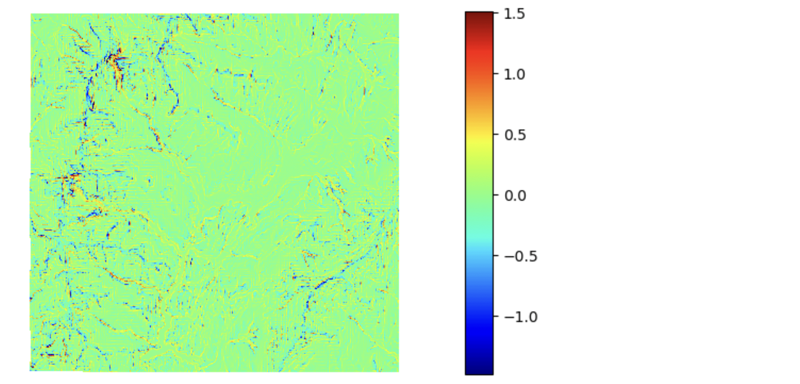

13. Terrain Analysis
There are many python libraries that are available for terrain analysis. Below, I use Arcpy, RichDEM, Rasterio, GDAL and pysheds for basic terrain analysis.
13.1. Displaying DEM
Terrain analysis starts with displaying digital elevation models. We have touched on this topic before. Below, a DEM of Stowe, VT is displayed with the RichDEM library.
import richdem as rd
import numpy as np
src = rd.LoadGDAL(r'/Users/.../elevation/w001001.adf')
rd.rdShow(src, ignore_colours=[0], axes=False, cmap='jet', figsize=(8,5.5))

13.2. Generating Hillshades
Hillshades are used in terrain analysis to give elevation data a 3-dimensional appearance thereby making it easier to visualize variations in topography. Hillshades are also frequently used in GIS and Cartography as underlays to make other kinds of data more visually interesting. Google Maps use hillshades extensivelly to portray terrain features of the earth.

Generate Hillshade with ArcPy
The two scripts below show how to generate hillshade maps using ArcPy within ArcMap or ArcGIS Pro.
Run this script from the ArcPy Window.
from arcpy.ia import *
out_hillshade_raster = Hillshade("elevation.tif", 180, 75, 0.3048)
out_hillshade_raster.save("C:/arcpyExamples/outputs/hillshade.tif")
This example calculates the hillshade using IDLE or any other IDE
# Import the system modules
import arcpy
from arcpy.ia import *
# Set the analysis environments
arcpy.env.workspace = "C:/arcpyExamples/data"
# Set the local variables
in_dem = "elevation.tif"
# Execute the Hillshade function
out_hillshade_raster = Hillshade(in_dem, 180, 75, 0.3048)
# Save the output
out_hillshade_raster.save("C:/arcpyExamples/outputs/hillshade.tif")
Source https://pro.arcgis.com/en/pro-app/latest/arcpy/image-analyst/hillshade.htm
Generate Hillshade using GDAL
The code sample below shows the details of computing hillshade.
from osgeo import gdal
from numpy import gradient
from numpy import pi
from numpy import arctan
from numpy import arctan2
from numpy import sin
from numpy import cos
from numpy import sqrt
from numpy import zeros
from numpy import uint8
import matplotlib.pyplot as plt
def hillshade(array, azimuth, angle_altitude):
x, y = gradient(array)
slope = pi/2. - arctan(sqrt(x*x + y*y))
aspect = arctan2(-x, y)
azimuthrad = azimuth*pi / 180.
altituderad = angle_altitude*pi / 180.
shaded = sin(altituderad) * sin(slope)\
+ cos(altituderad) * cos(slope)\
* cos(azimuthrad - aspect)
return 255*(shaded + 1)/2
ds = gdal.Open('/Users/semple/Desktop/topography/dem')
band = ds.GetRasterBand(1)
arr = band.ReadAsArray()
hs_array = hillshade(arr,315, 45)
plt.imshow(hs_array,cmap='gist_earth')
plt.show()

Generating Hillshade with Earthpy
import matplotlib.pyplot as plt
import earthpy as et
import earthpy.spatial as es
import earthpy.plot as ep
with rasterio.open('/Users/.../topography/dem') as src:
elev = src.read(1)
hillshade = es.hillshade(elev, azimuth=240, altitude=1)
ep.plot_bands(
hillshade,
cbar=False,
title="Hillshade of Wayne County",
figsize=(10, 6),
)
plt.show()
For information in earthpy, see https://earthpy.readthedocs.io/en/latest/gallery_vignettes/plot_dem_hillshade.html#sphx-glr-gallery-vignettes-plot-dem-hillshade-py
Draping Elevation Data on Hillshade using Earthpy and Matplotlib
In this example, both the elevation layer and the hillshade layer are displayed in a single figure and ax object.
import matplotlib.pyplot as plt
import earthpy as et
import earthpy.spatial as es
import earthpy.plot as ep
import matplotlib.colors as colors
with rasterio.open('/Users/.../elevation/w001001.adf') as src:
elevation = src.read(1)
#extent=[src.bounds[0], src.bounds[2], src.bounds[1], src.bounds[3]]
hillshade = es.hillshade(elevation, azimuth=240, altitude=10)
fig, ax = plt.subplots(figsize=(10, 6))
ep.plot_bands(
elevation,
ax=ax,
cmap="terrain",
norm = colors.Normalize(vmin = 0, vmax = src_array.max()),
title="Digital Elevation Model (DEM)\n overlayed on top of a hillshade",
)
ep.plot_bands(hillshade,
cmap='Greys',
alpha=0.5,
ax=ax,
cbar=False)
plt.show()
14. <<<<<<< HEAD:docs/source/terrain_analysis.rst
14.1. Displaying Terrain Data in 3D
3D Modeling Using Matplotlib
It is possible to display terrain data in 3D using matplotlib, but this library by itself is too slow for most GIS data processing. However, if you choose to use matplotlib, ensure that nodata values are not among the z-values that will be used to render the 3D model.
Below is a sample script to display terrain data in 3D using matplotlib.
import osgeo.gdal as gdal
import numpy as np
import matplotlib.pyplot as plt
# Open the grid file using GDAL
grid_file = '/Users/hsemple/Desktop/Python Scripts/stowe/StoweDEM2.tif'
dataset = gdal.Open(grid_file)
# Get the grid's geotransform and projection information
geotransform = dataset.GetGeoTransform()
# Get the grid size (number of rows and columns)
rows = dataset.RasterYSize
cols = dataset.RasterXSize
# Read the grid data as a numpy array
grid_data = dataset.ReadAsArray()
# Get the NoData value from the grid metadata
no_data_value = dataset.GetRasterBand(1).GetNoDataValue()
# Generate the x and y coordinates
x_origin = geotransform[0]
y_origin = geotransform[3]
pixel_width = geotransform[1]
pixel_height = geotransform[5]
x_coords = x_origin + pixel_width * np.arange(cols)
y_coords = y_origin + pixel_height * np.arange(rows)
# Convert the 2D grid into separate x, y, and z arrays
x, y = np.meshgrid(x_coords, y_coords)
#z = grid_data
z = grid_data.flatten()
# Mask the NoData values in the z array
z_masked = np.ma.masked_values(z, no_data_value)
# Plot the coordinates
fig = plt.figure(figsize=(10,8))
#fig = plt.figure()
ax = fig.add_subplot(111, projection='3d')
ax.scatter(x, y, z_masked, c=z_masked, cmap='terrain')
ax.set_xlabel('X')
ax.set_ylabel('Y')
ax.set_zlabel('Elevation')
plt.show()
# Close the dataset
dataset = None
Matplotlib often produces plots that have jagged peaks. These can be addressed by using some type of data smoothing algorithm.

3D Modeling Using Plotly
The plotly library produces quick results when creating 3D DEMS. A sample script for using Plotly is presented below. The script uses rasterio to load the DEM. It also uses Gaussian smoothing to the DEM dataa before converting to 3D. This is important because at times the plot can have jagged peaks. If this is the case, apply higher sigma values. The final plot is configured with axis titles and aspect ratio settings. The plot is saved as an HTML file using go_offline.plot(). Open the generated HTML file in a web browser to view the 3D model.
import numpy as np
import rasterio
import plotly.offline as go_offline
import plotly.graph_objects as go
from scipy.ndimage import gaussian_filter
# Load DEM data
with rasterio.open("/Users/.../StoweDEM2.tif") as src:
dem_data = src.read(1)
nodata = src.nodata
# Set the no data values to NaN
dem_data[dem_data == nodata] = np.nan
# Apply Gaussian smoothing to the DEM data
smoothed_dem = gaussian_filter(dem_data, sigma=15)
# Generate x, y coordinates for each pixel in the DEM
rows, cols = dem_data.shape
x_coords = src.xy(0, 0)[0] + src.res[0] * np.arange(cols)
y_coords = src.xy(0, 0)[1] + src.res[1] * np.arange(rows)
x, y = np.meshgrid(x_coords, y_coords)
# Create a 3D surface plot with the smoothed DEM data
fig = go.Figure(data=[go.Surface(x=x, y=y, z=smoothed_dem)])
# Configure the layout of the plot
fig.update_layout(
title="3D Model from DEM (Smoothed)",
scene=dict(
xaxis_title="X",
yaxis_title="Y",
zaxis_title="Elevation",
aspectratio=dict(x=1, y=1, z=0.2),
aspectmode="manual"
)
)
# Save the plot as an HTML file
go_offline.plot(fig, filename="3d_model_smoothed20.html")

3D Modeling Using ArcGIS Pro
Generating 3D plots can be done very efficienty using the 3D engine of ArcGIS Pro or QGIS. We can write code to perform the 3D modeling in these software. Below is a sample script for converting a 2D DEM into a 3D DEM using Arcpy within ArcGIS Pro.
import arcpy
# Set the workspace and input DEM raster
arcpy.env.workspace = r"C:\path\to\workspace"
input_dem = "input_dem.tif"
# Output 3D feature class
output_feature_class = "output_3d_dem"
# Convert the 2D DEM to 3D using arcpy
arcpy.conversion.RasterToGeometricNetwork(input_dem, output_feature_class)
# Add the 3D DEM to the current map
aprx = arcpy.mp.ArcGISProject("CURRENT")
map_view = aprx.activeView
map_view.camera.setExtent(map_view.getLayerExtent(output_feature_class))
map_view.camera.roll = 0 # Set the camera roll angle to 0
# Refresh the map view to display the 3D DEM
map_view.refresh()
# Save the project
aprx.save()
Draping Orthophoto over 3D Plots
Now, let’s look at a script that drapes an orthopho over the bare earth DEM model.
import arcpy
# Set the workspace and input DEM and orthophoto rasters
arcpy.env.workspace = r"C:\path\to\workspace"
input_dem = "input_dem.tif"
orthophoto = "orthophoto.tif"
# Output 3D feature class
output_feature_class = "output_3d_dem"
# Convert the 2D DEM to 3D using arcpy
arcpy.conversion.RasterToGeometricNetwork(input_dem, output_feature_class)
# Add the orthophoto as a raster layer to the current map
aprx = arcpy.mp.ArcGISProject("CURRENT")
map_view = aprx.activeView
map = map_view.map
orthophoto_layer = map.addRasterLayer(orthophoto)
# Add the 3D DEM to the current map
dem_layer = map.addFeatureClass(output_feature_class)
# Set the elevation surface to the 3D DEM
map.setElevationLayer(dem_layer, "", "", "")
# Set the orthophoto as the base map layer
map.setBasemapLayer(orthophoto_layer)
# Refresh the map view to display the draped orthophoto on the 3D DEM
map_view.refresh()
# Save the project
aprx.save()
>>>>>>> 9e9fd24 (New commit):source/terrain_analysis.rst
14.2. Slope Mapping
Generate Slope Map with Arcpy
The two scripts below show how to calculate slope using ArcPy.
Run this script from the ArcPy Window.
import arcpy
from arcpy import env
from arcpy.sa import *
env.workspace = "C:/.../topography"
outSlope = Slope("dem", "DEGREE", 0.3043) # Slope Tool
outSlope.save("C:/Washtenaw/county/outslope01")
Run this script using Idle in Python 2.7 on a machine that has ArcMap, or from Jupyter Notebook in ArcGIS Pro.
# Import system modules
import arcpy
from arcpy import env
from arcpy.sa import *
# Set environment settings
env.workspace = "C:/Washtenaw"
# Set local variables
inRaster = "C:/Washtenaw/county/washtenaw/topography/dem"
outMeasurement = "DEGREE"
zFactor = 0.3043
# Check out the ArcGIS Spatial Analyst extension license
arcpy.CheckOutExtension("Spatial")
# Execute Slope
outSlope = Slope(inRaster, outMeasurement, zFactor) # Slope Tool
# Save the output
outSlope.save("C:/Washtenaw/county/outslope02")
Calculate Slope from a DEM using PyQGIS
Generate Slope using the RichDem Library
First, install the RichDEM library. run the sample script below.
import matplotlib.pyplot as plt
import richdem as rd
#Load Raster
stowe_dem = rd.LoadGDAL(r'/Users/.../Stowe_DEM.tif')
#Perform Slope Calculation
slope = rd.TerrainAttribute(stowe_dem, attrib='slope_riserun')
#Display slope map
rd.rdShow(slope, axes=False, cmap='jet', figsize=(10, 6))

Generate Slope using GDAL
from osgeo import gdal
import numpy as np
import rasterio
import matplotlib.pyplot as plt
def calculate_slope(DEM):
gdal.DEMProcessing('slope.tif', DEM, 'slope')
with rasterio.open('slope.tif') as dataset:
slope = dataset.read(1)
return slope
slope=calculate_slope("/Users/student/Desktop/TestDEM.tif")
plt.imshow(slope, cmap='copper')
plt.show()
14.3. Aspect Mapping
Calculate Aspect Using Arcpy
The script below show how to generate an aspect map using ArcPy.
Calculate Aspect
# Import system modules
import arcpy
from arcpy import env
from arcpy.sa import *
# Set environment settings
env.workspace = "C:/Users/.../data"
# Set local variables
inRaster = "elevation"
# Execute Aspect
outAspect = Aspect(inRaster) # Aspect tool
# Save the output
outAspect.save("C:/sapyexamples/output/outaspect02")
Generate Aspect Using the GDAL Library
from osgeo import gdal
import numpy as np
import rasterio
import matplotlib.pyplot as plt
def calculate_aspect(DEM):
gdal.DEMProcessing('aspect.tif', DEM, 'aspect')
with rasterio.open('aspect.tif') as dataset:
aspect = dataset.read(1)
return aspect
aspect=calculate_aspect("/Users/.../TestDEM.tif")
plt.imshow(aspect, cmap='copper')
plt.show()
For more information, please see this website - https://richdem.readthedocs.io/en/latest/terrain_attributes.html
Generate Aspect Using the RichDEM Library
import matplotlib.pyplot as plt
import richdem as rd
dem = rd.LoadGDAL('/Users/.../elevation')
aspect = rd.TerrainAttribute(dem, attrib='aspect')
rd.rdShow(aspect, axes=False, cmap='jet', figsize=(7, 5))
plt.show()

14.4. Curvature Maps
Generate Curvature Maps Using Arcpy
The first two scripts below show how to calculate curvature using ArcPy. The third script shows how to compute profile with the richdem library.
Curvature Example for Use in ArcGIS Python Window
from arcpy.ia import *
out_curvature_raster = Curvature("curvature_input.tif", "profile", 2)
out_curvature_raster.save("C:/.../curvature.tif")
Curvature Example for Arcpy
This example calculates the curvature of a given slope. Use in Idle or Python Notebook
# Import system modules
import arcpy
from arcpy.ia import *
# Set the analysis environments
arcpy.env.workspace = "C:/data"
# Set the local variables
in_raster = "curvature_input.tif"
# Execute Curvature function
out_curvature_raster = Curvature(in_raster, "planform", 3)
# Save the output
out_curvature_raster.save("C:/data/outputs/cur_planform.tif")
Click on the hyperlink for more code samples - https://pro.arcgis.com/en/pro-app/latest/tool-reference/spatial-analyst
Curvature Script for RichDem
port richdem as rd import matplotlib.pyplot as plt
dem = rd.LoadGDAL(‘/Users/…/Stowe_Dataset/elevation’) #dem = rasterio.open(‘/Users/…/Stowe_Dataset/elevation’)
profile_curvature = rd.TerrainAttribute(dem, attrib=’profile_curvature’) rd.rdShow(profile_curvature, axes=False, cmap=’jet’, figsize=(6,4))
plt.show()
Note: When working with the RichDEM library, valid attributes are: slope_riserun, slope_percentage, slope_degrees, slope_radians, aspect, curvature, planform_curvature, profile_curvature |
14.5. Computing Viewshed
Viewshed Using Arcpy
This sample script comes from ESRI. It calculates surface locations that are visible to a set of observers defined in a shapefile. The script requires the 3D Analyst Extension
import arcpy
from arcpy import env
# Set environment settings
env.workspace = "C:/data"
# Set local variables
inRaster = "elevation"
inObserverFeatures = "observers.shp"
outViewshed = "C:/output/outvwshd02"
zFactor = 2
useEarthCurvature = "CURVED_EARTH"
refractivityCoefficient = 0.15
# Execute Viewshed
arcpy.ddd.Viewshed(inRaster, inObserverFeatures, outViewshed, zFactor,
useEarthCurvature, refractivityCoefficient)
14.6. Watershed Delineation Using PySheds
I came across a library called pysheds that can be used for watershed delineation. Tested sample code is presented below.
from pysheds.grid import Grid
import numpy as np
grid = Grid.from_raster('/Users/.../Stowe_Dataset/elevation')
dem = grid.read_raster('/Users/.../Stowe_Dataset/elevation')
# Fill Sinks
# ----------------------
# Fill pits in DEM
pit_filled_dem = grid.fill_pits(dem)
# Fill depressions in DEM
flooded_dem = grid.fill_depressions(pit_filled_dem)
# Resolve flats in DEM
inflated_dem = grid.resolve_flats(flooded_dem)
# Determine D8 flow directions from DEM
# ----------------------
# Specify directional mapping
dirmap = (64, 128, 1, 2, 4, 8, 16, 32)
# Compute flow directions
# -------------------------------------
fdir = grid.flowdir(inflated_dem, dirmap=dirmap)
# Calculate flow accumulation
# --------------------------
acc = grid.accumulation(fdir, dirmap=dirmap)
# Delineate a catchment
# ---------------------
# Specify pour point
x, y = -97.294, 32.737
# Snap pour point to high accumulation cell
x_snap, y_snap = grid.snap_to_mask(acc > 1000, (x, y))
# Delineate the catchment
catch = grid.catchment(x=x_snap, y=y_snap, fdir=fdir, dirmap=dirmap,
xytype='coordinate')
# Crop the catchment
# ---------------------------
# Clip the bounding box to the catchment
grid.clip_to(catch)
clipped_catch = grid.view(catch)
# Extract river network
# ---------------------
branches = grid.extract_river_network(fdir, acc > 50, dirmap=dirmap)
# Calculate distance to outlet from each cell
# -------------------------------------------
dist = grid.distance_to_outlet(x=x_snap, y=y_snap, fdir=fdir, dirmap=dirmap,
xytype='coordinate')
# Plot the catchment
fig, ax = plt.subplots(figsize=(8,6))
fig.patch.set_alpha(0)
plt.grid('on', zorder=0)
im = ax.imshow(np.where(clipped_catch, clipped_catch, np.nan), extent=grid.extent,
zorder=1, cmap='Greys_r')
plt.xlabel('Longitude')
plt.ylabel('Latitude')
plt.title('Delineated Catchment', size=14)
Source: http://mattbartos.com/pysheds/
14.7. Working with GDAL Command Line Utilities
GDAL (Geospatial Data Abstraction Library) is perhaps the most established library for reading and processing raster and vector geographical data. It is used by many GIS including ArcGIS and QGIS. GDAL is written in the C++ programming language, but bindings are available that allow it to called from other languages.
GDAL also has some special programs called Utilities, which are useful for performing many popular GIS tasks. These utilities can be called from the command line assuming that proper path is set. They can also be from within Python. In this section, we will look at how to call GDAL Utilities from the command line. In the next section, we will look at calling GDAL from within Python.
Getting Information about a Raster
Let’s try the gdalifo command which can be executed from the command prompt. Gdalifo returns a lengthy list of details about the raster.
>>> $ gdalinfo /Users/.../WhiteadderDEM.tif
The results are shown below:
Driver: AIG/Arc/Info Binary Grid
Files: /Users/.../Desktop/Stowe_Dataset/elevation
Size is 775, 756
Coordinate System is:
PROJCRS["unnamed",
BASEGEOGCRS["NAD83",
DATUM["North American Datum 1983",
ELLIPSOID["GRS 1980",6378137,298.257222101,
LENGTHUNIT["metre",1]]],
PRIMEM["Greenwich",0,
ANGLEUNIT["degree",0.0174532925199433]],
ID["EPSG",4269]],
CONVERSION["unnamed",
METHOD["Transverse Mercator",
ID["EPSG",9807]],
PARAMETER["Latitude of natural origin",42.5,
ANGLEUNIT["degree",0.0174532925199433],
ID["EPSG",8801]],
PARAMETER["Longitude of natural origin",-72.5,
ANGLEUNIT["degree",0.0174532925199433],
ID["EPSG",8802]],
PARAMETER["Scale factor at natural origin",0.999964286,
SCALEUNIT["unity",1],
ID["EPSG",8805]],
PARAMETER["False easting",500000,
LENGTHUNIT["METERS",1],
ID["EPSG",8806]],
PARAMETER["False northing",0,
LENGTHUNIT["METERS",1],
ID["EPSG",8807]]],
CS[Cartesian,2],
AXIS["easting",east,
ORDER[1],
LENGTHUNIT["METERS",1]],
AXIS["northing",north,
ORDER[2],
LENGTHUNIT["METERS",1]]]
Data axis to CRS axis mapping: 1,2
Origin = (470957.412858718482312,231421.559170683787670)
Pixel Size = (30.680581002795002,-30.680581002795002)
Metadata:
DataType=Generic
Corner Coordinates:
Upper Left ( 470957.413, 231421.559) ( 72d51'56.55"W, 44d34'56.75"N)
Lower Left ( 470957.413, 208227.040) ( 72d51'51.86"W, 44d22'25.30"N)
Upper Right ( 494734.863, 231421.559) ( 72d33'58.68"W, 44d34'58.78"N)
Lower Right ( 494734.863, 208227.040) ( 72d33'57.83"W, 44d22'27.33"N)
Center ( 482846.138, 219824.300) ( 72d42'56.23"W, 44d28'42.39"N)
Band 1 Block=256x16 Type=Float32, ColorInterp=Undefined
Description = elevation
Min=133.493 Max=1335.372
Minimum=134.525, Maximum=1333.913, Mean=476.449, StdDev=214.550
NoData Value=-3.4028234663852886e+38
Overviews: 388x378, 194x189
Metadata:
RepresentationType=ATHEMATIC
STATISTICS_APPROXIMATE=YES
STATISTICS_MAXIMUM=1333.9129638672
STATISTICS_MEAN=476.44892214671
STATISTICS_MINIMUM=134.52473449707
STATISTICS_STDDEV=214.55017815777
STATISTICS_VALID_PERCENT=98.84
Converting Between Raster Formats
We can convert between raster file formats using the gdal_translate tool. Gdal_translate recognises many file formats. To set the file format, use the ‘-of’ flag. An example of the syntax is shown below:
>>> $ gdal_translate -of ENVI /Users/student/Downloads/WhiteadderDEM.tif /Users/hsemple/Downloads/WhiteadderDEM.bil
Clipping Rasters using GDAL
Clipping rasters can be done quite easily using gdal. You can enter the bounding coordinates of the clipping extent or you can supply a raster or vector file as the extent.
>>> $ gdalwarp -te <x_min> <y_min> <x_max> <y_max> input.bil clipped_output.bil
Merging Rasters using GDAL
If you have large DEMs you can merge them very quickly using GDAL
>>> $ gdal_merge.py -o out.tif in1.tif in2.tif
#The -o flag indicates the outfile.
Changing Raster Projections with Gdalwarp
We can change the underlying projections of rasters using the gdalwarp command. The gdalwarp command detects the projection of the raster that is to be projected so we do not have enter this value. The ‘-t_srs’ flag is used to assign the target coordinate system, which must be placed in quotes. An example of the basic command is shown below:
>>> $ gdalwarp -t_srs '+proj=utm +zone=44 +datum=WGS84' projected.tif reprojected.tif
See this link for more info: https://www.geos.ed.ac.uk/~smudd/TopoTutorials/html/tutorial_raster_conversion.html#converting-between-formats-using-gdal
Compute Slope
>>> $ gdaldem slope inputDem.tif output_slope.tif
Make a Colored Relief Map
First, run gdalinfo and get the minimum and maximum elevation of the DEM. Next, use these values to make some elevation breaks and some corresponding RGB colors for each break. In the example below, the first number in each row represents the upper breakpoint for the color range while the next three values are RGB values. In the example, echo takes everything between the quotations and places it into a file called color-relief.txt usng the > operator:
Once the color map file is completed, we can use it generate a colored relief, as shown in the example below:
>>> gdaldem color-relief -of PNG sf-dem.tif color-relief.txt sf-dem-coloredRelief.tif
For more information on how to work with GDAL command line utilities, see this website - https://gdal.org/programs/gdaldem.html
Computing Viewsheds
gdal_viewshed -md 500 -ox -10147017 -oy 5108065 source.tif destination.tif
The flags have the following meaning:
- -md
Maximum distance from observer to compute visibiliy. It is also used to clamp the extent of the output raster.\
- -ox <value>
The X position of the observer (in SRS units).
- -oy <value>
The Y position of the observer (in SRS units).
For more information, see https://man.archlinux.org/man/community/gdal/gdal_viewshed.1.en
14.8. Running GDAL Commands from Python
It is possible to call GDAL commands from Python and other scripting languages. This allows for easy iteration through geoprocessing tasks, or integration of geoprocessing steps into complex scripted workflows. For more information, please visit this page: https://gdal.org/tutorials/raster_api_tut.html. Below are some code samples for using GDAL from within Python.
Open a Raster with GDAL
We have already seen this structure in previous Python scripts that used the gdal library.
from osgeo import gdal
fn = r" /Users/student/Desktop/Stowe_Dataset/elevation"
ds = gdal.Open(fn) # 0 (default) read-only, 1 update
print(type(ds))
Get Raster Properties
fn_dem = r"..\data\input\USGS_one_meter_x64y486_ID_FEMAHQ_2018.tif"
fn_img = r"..\data\input\m_4311515_ne_11_1_20150908_20160104.jp2"
ds = gdal.Open(fn_dem) # 2 arguments: (file name, access type: 0 (default) read-only, 1 update)
nrows = ds.RasterYSize
ncols = ds.RasterXSize
proj = ds.GetProjection() # returns WKT definition
nbands = ds.RasterCount
geot = ds.GetGeoTransform()
15. <<<<<<< HEAD:docs/source/terrain_analysis.rst
>>>>>>> 9e9fd24 (New commit):source/terrain_analysis.rst
15.1. Exercises
Write a script that prompts the user for the path to an input DEM and an input satellite imagery. Afterwards, the script should generate a hillshade of the area. Finally, the script should drape the satellite imagery over the hillshade. You can download sample data here
Instead of generating a hillshade, write a second script to generate a 3D model of the area. Afterward, let the script drape a satellite imagery over the 3D model of the area.
15.2. Resources
Draping an orthophoto over a DEM https://subscription.packtpub.com/book/big-data-and-business-intelligence/9781783555079/10/ch10lvl1sec73/draping-an-orthophoto-over-a-dem
Batch processing – automatizing the use of GDAL and SAGA GIS tools using Bash Shell scripts https://www.luisalucchese.com/post/batch-processing-gdal-saga-gis-bash/
Working with Rasterio https://geobgu.xyz/py/rasterio.html
Popular GDAL commands. https://github.com/dwtkns/gdal-cheat-sheet
Classify a Raster Using Threshold Values in Python - 2017 - https://www.neonscience.org/resources/learning-hub/tutorials/classify-raster-thresholds-py
16. <<<<<<< HEAD:docs/source/terrain_analysis.rst
https://www.blendernation.com/2016/09/03/owen-powell-maps-terrain-models/
>>>>>>> 9e9fd24 (New commit):source/terrain_analysis.rst